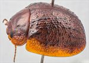
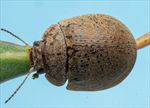
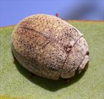
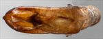
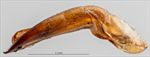
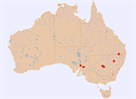

Click on images to enlarge


Male, Inglewood, S.E. Queensland


Male, Inglewood, S.E. Queensland


Male, Mount Hope, central New South Wales


Aedeagus, dorsal view (Inglewood, S.E. Queensland)


Aedeagus, lateral view (Inglewood, S.E. Queensland)


Name
Trachymela sp. Ta110
Reference specimen
2021-107a, Inglewood, SE Queensland.
Adult Description
Length: ♂ 7.1–8.0 mm (n=6), ♀ 6.9–8.0(8.4) mm (n=8).
Colouration:
- Head: uniformly mid-brown, rarely with fronto-clypeal suture partially outlined in black, labrum yellow-brown, mandibles black-tipped; antennomeres 1–3 straw-brown, 4–11 concolorous or fractionally darker, outer 2–5 antennomeres usually with distal extremes dark brown.
- Pronotum: brown, concolorous with or fractionally darker than head, sometimes with a vague, darker brown band parallel to and just behind anterior margin of disc.
- Scutellum: brown, concolorous with pronotum or, rarely, darker, edged in darker brown.
- Elytra: brown, usually concolorous with pronotum, with many small dark brown or black verrucae scattered over discal surface, most prominent of these are a relatively closely spaced row (VR3) which is often continuous and black in its anterior section, VR5 is also often spaced closely enough to be discernible as a row, verrucae within other rows are more widely spaced and their presence in rows may not be obvious, the dark verrucae often align transversely just behind antero-median depression and these are frequently connected by raised, often dark transverse interstices to form a partially interrupted ridge; humeral callus dark brown or black, rarely concolorous with surrounding surface, punctures concolorous with interstices.
- Venter & Legs: completely light- to mid-brown, sometimes with parts of ventrites, especially margins, slightly darker, legs concolorous, epipleura light brown.
- Cuticular Wax: uniformly light brown, with pronotum scattered with a layer that is even or may be slightly more dense towards the lateral margins, elytral covering more evenly distributed and often slightly denser, with the dark verrucae prominently contrasting.
Morphology:
- Shape: profile uniformly curved and moderately high, elytral summit clearly in front of middle of elytral margin.
- Head: puncture size variable (pd ≈ 1.5–2.5×ef), mixed sizes often present, and quite evenly but densely distributed; antennae moderate to long (AL/BL: ♂ 40–43%, ♀ 34–36%), filiform.
- Pronotum: almost evenly curved transversely over discal area, with foveal depression usually evident but uneven, a small, round pimple-like elevation present near its centre, puncturation similar in size as the larger punctures on head, more or less clearly impressed, evenly distributed and dense in discal area, interstices in discal area smooth to slightly uneven but never obscuring punctures, punctures becoming much coarser towards margin. Front margins join lateral margins in a smoothly and slightly obtuse angle, with lateral margin very slightly curved for a short distance before curvature increases slightly but smoothly towards rear margin.
- Scutellum: surface smooth to slightly rough, lightly to densely punctured, punctures usually similar in size or fractionally smaller than those on adjacent surface of pronotum.
- Elytra: surface almost evenly curved in lateral view, evenly curved transversely throughout, margins not at all explanate, punctures moderately large and relatively evenly distributed and in some parts partially obliterated by rugose interstices, many small, mostly round or sometimes laterally extended verrucae, many with small central punctures are scattered over surface of disc, the organization of these into longitudinal rows is evident clearly only for series VR3 and VR5 with the former sometimes in the form of a continuous ridge at its anterior extreme, interstices variable, sometimes relatively smooth, more often more convex, tending to obliterate small verrucae, with a few transverse wrinkles often present near middle of discal margin and connecting adjacent verrucae, surface continuous, rarely slightly discontinuous, under humeral callus, lateral margin almost straight or angled upwards very slightly in anterior third; vertical extension of epipleura large (HCE/PW = 0.37–0.41).
- Venter: prosternal process almost parallel-sided before widening towards posterior, open or partially closed anteriorly, a scatter of short setae on prosternal process, none or two on mesoventrite, a single seta on anterior and median trochanter; front edge of metaventrite beveled, truncate; posterior section of epipleura lightly setose, often very sparse or (rarely) completely absent.
Male Genitalia (Aedeagus):
- Dimensions: moderate-sized (LPE/BL = 28–33%).
- Dorsal view: sides of shaft slightly sinuate and broadest near basal sulcus and around middle of ostium, from ostium sides converge towards apex in a smooth arc, dorsal surface with well-defined dorso-median channel and dorsolateral channels resulting in two long dorsal ostial processes projecting far towards apex in the tear-shaped ostial depression; tip small and triangular, sometimes with tip truncate.
- Lateral view: shaft curved sharply through about 45° near base then ventral surface almost straight before an almost imperceptible downward curve near apex, dorsal surface straight for about half this distance, then converging evenly towards ventral surface, dorsal ostial processes usually projecting above dorsal surface in a smooth curl, tip deflexed.
Immature Stages
Unknown.
Similar species
- Ta88: specimens of this species overlap broadly with Ta110 in size and general appearance and are clearly very closely related (or even conspecific). The verrucae in Ta88 tend to be more clearly organized into 4 rows, and Ta88 always has a quadrate patch on the pronotum behind each eye which is lacking in Ta110. The aedeagus of these two species is almost identical in shape and dimensions, though Ta88 tends to be fractionally more rounded from broadest point to apex. Another difference is that Ta110 seems to prefer eucalypts in section Adnataria, while Ta88 is found on mallee hosts in sections Dumaria and Bisectae.
Notes
- Taxonomy: Included in this grouping are a few specimens from central New South Wales (Yathong) and from South Australia which are very likely to be different, but more material is required to confirm this. The single male from Mount Hope near Yathong has an aedeagus that, though superficially like those from southern Queensland specimens, is slightly more rounded apically and very slightly broader. All Yathong/Mount Hope specimens exceed specimens from southern Queensland in body length. The two female specimens from South Australia have black inner epipleura, though they are very similar in all other characters.
- Distribution & Abundance: Recorded from southern Queensland, central New South Wales (Yathong, Mount Hope), and South Australia.
- Host Associations: Found on the ironbark species Eucalyptus caleyi and E. crebra (Symphyomyrus : Adnataria) in southern Queensland. Specimens from Yathong and Mount Hope were collected from unspecified mallee eucalypts, while the two South Australian specimens were collected from mallee eucalypts also, including one on E. porosa (Symphyomyrus : Adnataria).
Copyright © 2026. All rights reserved.